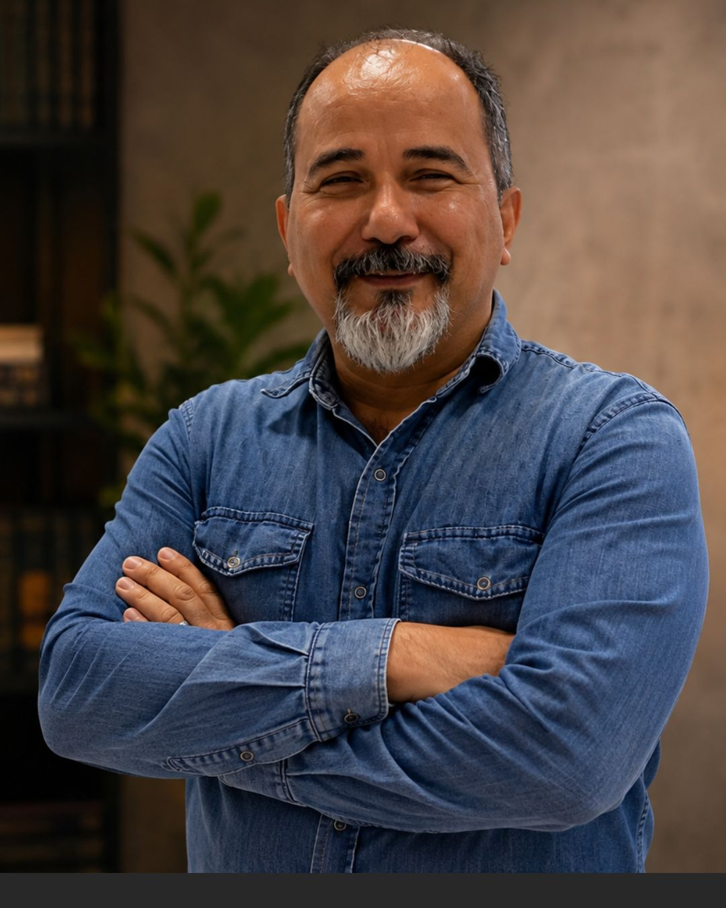

Francisco Denilson Pinheiro
Francisco Denilson Pinheiro é escritor, pastor e palestrante, dedicado ao ensino das Escrituras e à produção de conteúdos cristãos que convidam à reflexão, à fé e à transformação.
Sua escrita nasce da caminhada ministerial, da reflexão bíblica e do desejo de ajudar pessoas a aprofundarem seu relacionamento com Deus, olhando não apenas para aquilo que fazem, mas também para aquilo que estão se tornando.
Em seus escritos, procura conduzir o leitor a uma jornada de autoconhecimento à luz das Escrituras, amadurecimento espiritual e preparação do caráter para viver o propósito de Deus.
Conheça as Obras Instagram @prdenilsonescritorUma jornada de transformação de dentro para fora
Mais do que compartilhar ideias, seus livros buscam despertar perguntas, promover reflexão e lembrar que a caminhada cristã também envolve permitir que Deus trabalhe no coração, nas motivações e no caráter.
Essa perspectiva está presente em Antes Que Eu Seja Usado, obra que convida o leitor a refletir sobre a preparação interior antes de viver plenamente sua vocação.
Voltar ao Início Ver as Obras